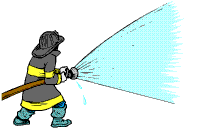
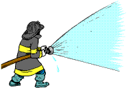

Why I Do This
I've always been fascinated by emergency services and the important role they play in our communities. This passion led me to start documenting their work, sharing powerful moments and apparatus vehicles with the public.
Welcome to Edmonton Emergency Photography! I capture firefighters, fire trucks, and emergency responses in action with my camera. My goal is to document the bravery and dedication of first responders through photography and some videography.
I've always been fascinated by emergency services and the important role they play in our communities. This passion led me to start documenting their work, sharing powerful moments and apparatus vehicles with the public.
 
